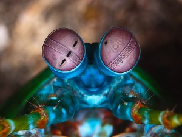
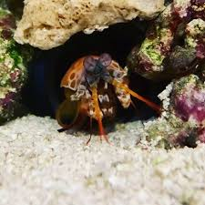

Fatos sobre o Stomatopoda...
Classificação cientifica
- Reino: Animalia
- Filo: Arthropoda
- Subfilo: Crustacea
- Classe: Malacostraca
- Subclasse: Hoplocarida
- Ordem: Stomatopoda(Latreille, 1817)
visão...
 Nativas do Oceano Pacífico, esses animais possuem três pontos
focais e são capazes de enxergar do espectro ultravioleta ao infravermelho,
sendo os únicos olhos do mundo que possuem essa capacidade de percepção.
soco mais rápido do mundo...

São capazes de desferir um dos mais rápidos e violentos golpes do reino animal,
um soco que pode apresentar a velocidade de um tiro calibre .
22 (equivalente a 720km/h) e uma força de impacto de >60 kg/cm².
Onde eles vivem...
Vivem em tocas que constrói nos fundos dos corais, ou através de buracos
deixados por outros animais,
em rochas e substratos próximos de corais de recifes a cerca de 40 metros
de profundidade.